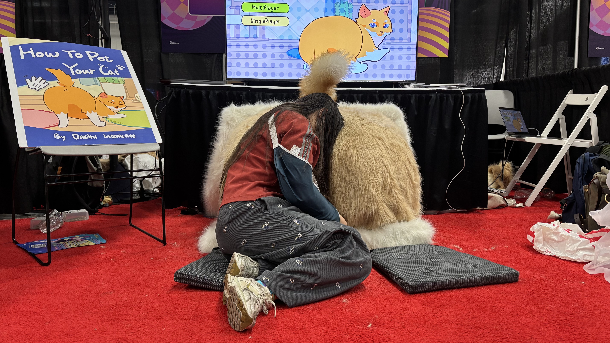
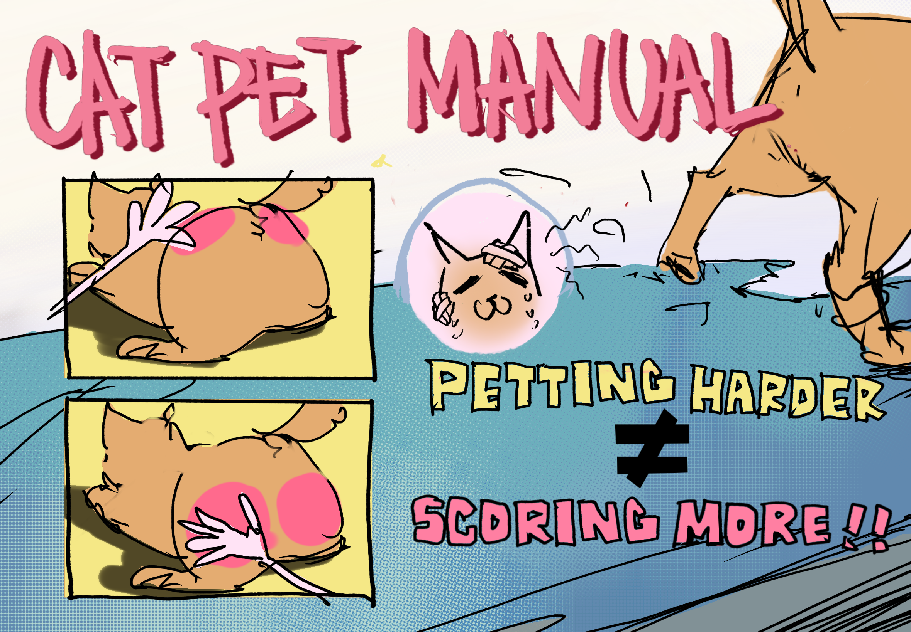
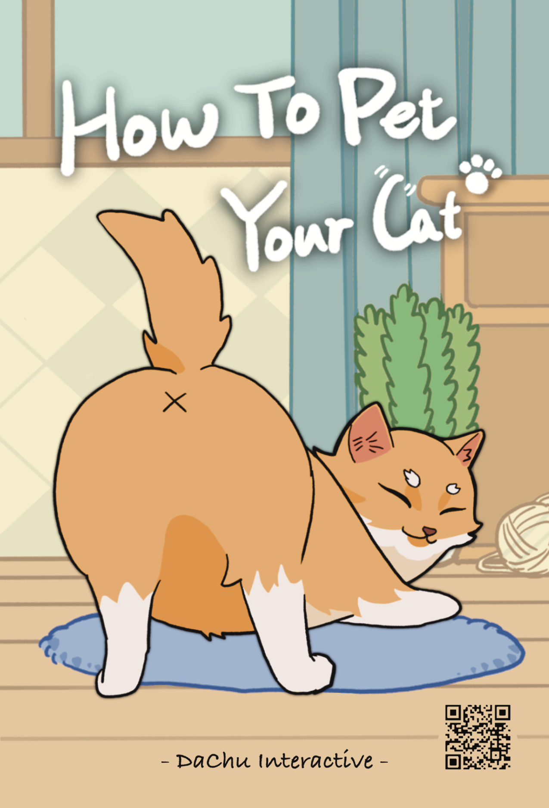
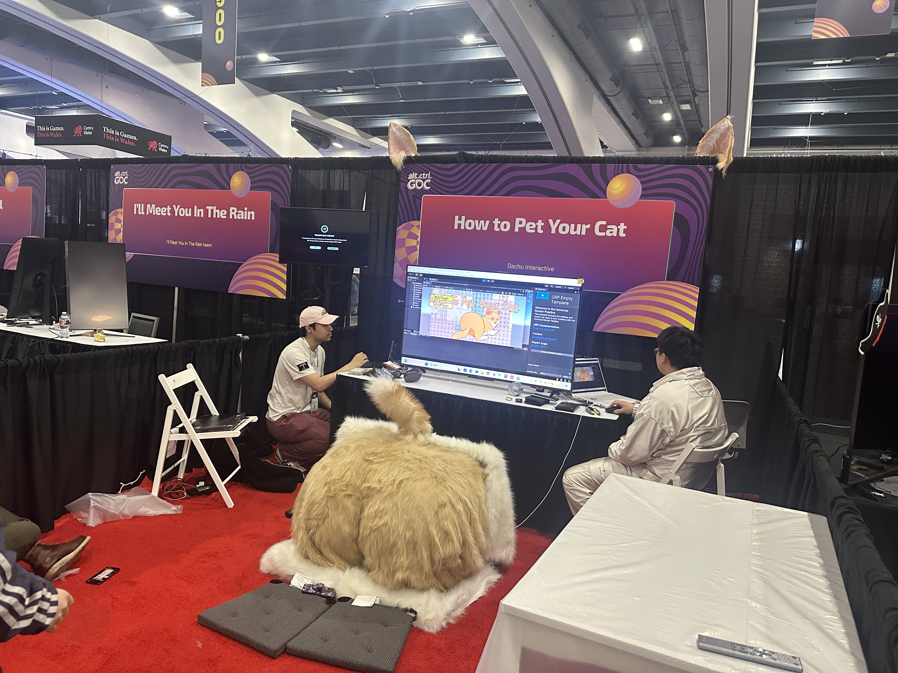
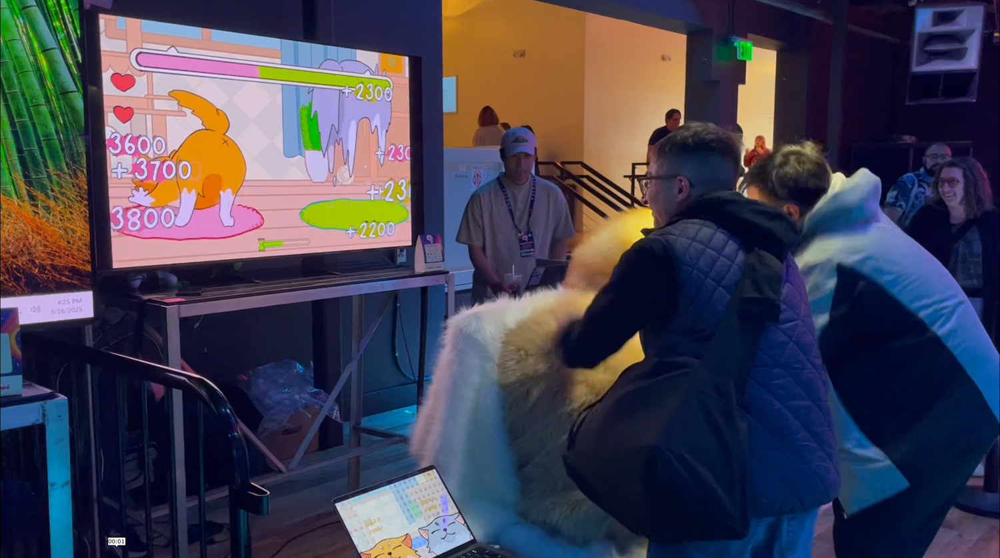
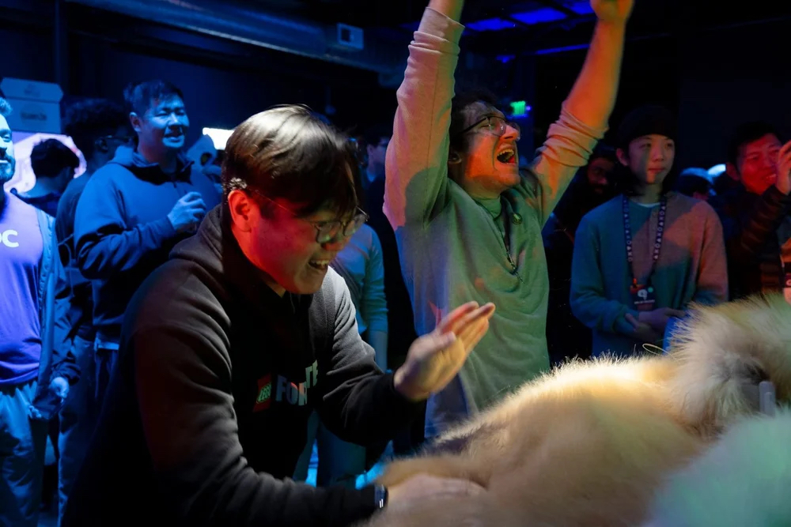
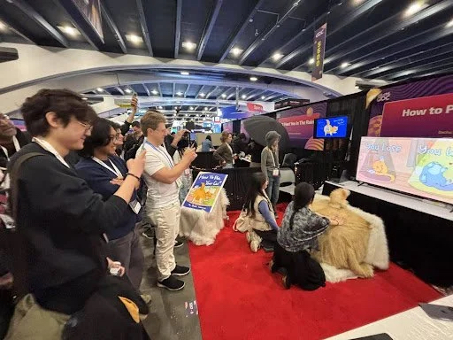

Overview
Pet together, score together
How to Pet Your Cat is a short alt.ctrl experience that turns a large plush cat into a shared physical controller. Players gather around the installation, pet the cat together, and respond to the game on screen in a playful burst of social interaction.

Marketing for Print
Preparing the game for exhibition
I adapted the team's existing artwork into print-ready marketing materials for the GDC exhibition, adjusting the assets for physical production while preserving the original visual direction.


Exhibition at GDC
From setup to live play
The installation paired the oversized plush controller with a screen and exhibition signage. On the floor, it became a gathering point where players could immediately understand the physical interaction and join in together.



